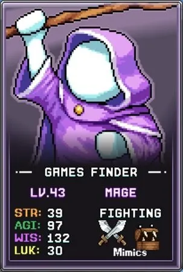
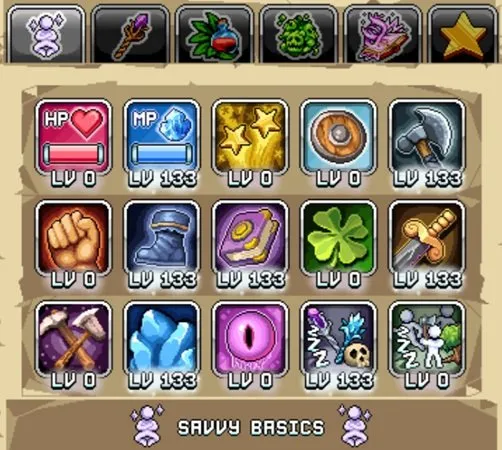
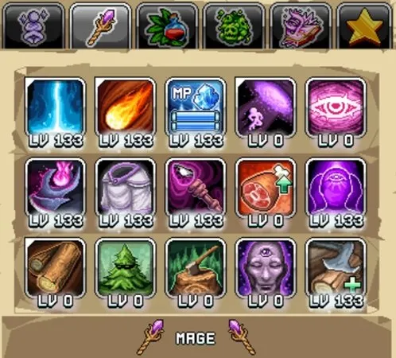

번역 안내. 클래스·스킬·탤런트 이름 등 고유명사는 인게임 검색을 위해 영어 그대로 두었고, 설명만 한글로 옮겼습니다.

빌드 개요

효과적인 Mage를 육성하는 방법은 다른 기본 클래스들과 유사한 패턴을 따릅니다. Accuracy(명중률) 요건을 충족하는 것이 첫 번째 목표이며, Mage의 경우 이는 민첩(AGI) 스탯을 먼저 올리는 것을 의미합니다. 그 다음에는 데미지, 지혜, 유틸리티 탤런트를 추가하여 전투 수익을 향상시킵니다. 아래 탤런트 가이드는 일반적인 우선순위 순서를 제시합니다.
Mage 탭 1 탤런트
다음 탭 1 스킬들을 우선순위에 따라 투자하십시오.
| 탤런트 | 효과 | 설명 |
|---|---|---|
| Quickness Boots | 기본 AGI(민첩) 증가 | Accuracy로 변환되는 Mage의 주요 민첩 원천입니다. World 1 보스에 도달할 때까지 35포인트를 투자하는 것이 좋으며, 이는 레벨당 약 1포인트에 해당합니다. 추가 Accuracy가 필요하면 포인트를 더 추가하되, World 1 이후에는 계정 전체 Accuracy 업그레이드가 생기기 시작합니다. |
| Sharpened Axe | 기본 무기 파워 증가 | 데미지와 전반적인 전투 수익을 향상시키는 단순하고 효과적인 무기 파워 부스트입니다. 이후의 % 데미지 부스트 탤런트들이 더욱 강해지는 기반을 제공합니다. |
| Overclocked Energy | 최대 마나(MP)의 10의 거듭제곱에 따라 % 데미지 증가 | 처음 30포인트는 10의 거듭제곱 최대 마나마다 1% 이상의 데미지 부스트를 제공하여 아래의 Gilded Sword보다 효율적입니다. 30포인트 이후에는 Gilded Sword를 먼저 만레벨로 올린 뒤 이 탤런트로 돌아오십시오. |
| Gilded Sword | 주는 데미지 % 증가 | 탤런트 레벨당 1%씩 데미지가 증가하여 Sharpened Axe와 장비 업그레이드로 쌓은 데미지 기반을 더욱 강화합니다. |
| Idle Casting | 전투 AFK 수익률 % 증가 | 데미지가 확보되면 AFK(방치) 수익을 높여 총 전투 수익을 증가시킵니다. |
| Book of the Wise | 기본 WIS(지혜) 증가 | 지혜 스탯은 추가적인 데미지 원천을 제공하며, Idleon 게임 후반부로 갈수록 특히 강력해집니다. |
| Mana Booster | 최대 마나(MP) 증가 | Overclocked Energy의 효과를 미는 기본 마나 부스트이지만, 낮은 우선순위의 데미지 원천입니다. |

Mage 탭 2 탤런트
다음 탭 2 스킬들을 우선순위에 따라 투자하십시오.
| 탤런트 | 효과 | 설명 |
|---|---|---|
| Power Overwhelming | 무기 파워의 데미지 효과 % 증가 | 무기 파워를 추가 데미지로 변환하므로 Mage 전투 빌드의 우선순위 탤런트입니다. 단, 새 공격 탤런트를 해금하기 위해 Energy Bolt와 Mini Fireball에 각 1포인트씩 먼저 투자하십시오. |
| Energy Bolt | 다음 기본 공격이 몬스터에게 추가 데미지를 줌 | Mage 클래스로 승급하면 즉시 1포인트 투자 후 공격 바에 배정하십시오. AFK 및 Active(직접 플레이) 전투 모두 향상됩니다. Power Overwhelming을 만레벨로 올린 후에는 50포인트까지 투자하고(AFK 수익 효율이 줄어드는 기준점), Mana Overdrive를 올린 다음 만레벨로 채우십시오. |
| Mini Fireball | 데미지를 주는 파이어볼 발사 | Energy Bolt와 동일하게 처음에는 50포인트를 투자한 후, Mana Overdrive를 올린 다음 만레벨로 채우십시오. |
| Knowledge Is Power | WIS의 데미지 효과 % 증가 | 지혜의 효과를 증폭시키며, 지혜가 수백에서 수천 이상으로 늘어날수록 더욱 강력해집니다. |
| Individual Insight | 기본 WIS(지혜) 증가 | 더 많은 지혜는 데미지를 증가시키며 위의 Knowledge Is Power와 시너지를 발휘합니다. |
| Mana Overdrive | 최대 마나(MP) % 증가 | 위의 강력한 지혜 탤런트들을 완성한 후 마나를 더욱 높여야 할 시기입니다. 마나는 Overclocked Energy로 인해 보조 데미지 원천이 됩니다. 이 탤런트 이후에는 Energy Bolt와 Mini Fireball을 만레벨로 올리십시오. |
| Unt'Wis'Ted Robes | 장비의 WIS % 증가 | 초반 장비의 스탯 수치가 낮아 Idleon 후반부까지는 가치가 거의 없습니다. 탤런트 포인트가 넘쳐나고 다른 모든 것을 올린 후에 남은 포인트를 여기에 투자하여 추가 지혜 데미지를 얻을 수 있습니다. |
| Choppin It Up Ez | 미니게임 보상 % 증가 및 미니게임 최고 점수 기반 % 데미지 증가 | Mage 탭에서 마지막으로 남은 데미지 원천으로, 벌목 미니게임 최고 점수에 비례합니다. 미니게임 고수라도 전체 데미지에서 차지하는 비중이 작으므로 가장 낮은 우선순위입니다. |